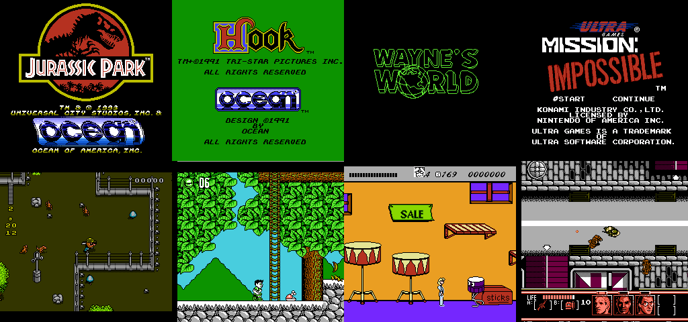
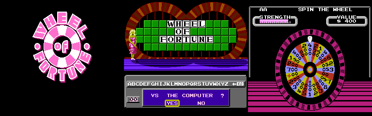
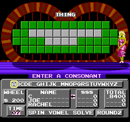
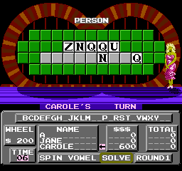

I recently set up a RetroPie. After revisiting some of the standard NES highlights from my childhood (Super Mario 3! Legend of Zelda! Mega Man 6!), I started to explore some of the more obscure NES titles.
Most of them are pretty bad. A good rule of thumb seems to be that if you cherished a particular movie in the late 80s or early 90s, it exists as a terrible Mario or Zelda knockoff on the NES.
However, the Wheel of Fortune game was fun enough that I kept coming back to it.
In many ways Wheel of Fortune is a great game for the NES, since the gameplay doesn't need complicated graphics or a controller with more than 2 buttons. Unfortunately I was soon reminded that puzzle games on old systems have a crippling flaw — not enough puzzles! After playing the game a handful of times, repeats started showing up. Something had to be done about that. Repeat puzzles are no way to play the Wheel.
My general strategy was to figure out how puzzles are stored on the Wheel of Fortune ROM file, and overwrite the program with fresh puzzle data (note that this is both a metaprogramming problem and a metapuzzle problem. Fantastic). I started by looking for one of the puzzles I remembered — Total Eclipse of the Sun— in the ROM. Fortunately the clues are stored in (mostly) ascii text in a contiguous block, so grepping the hexdump worked fine:
That TOTA.ECLIPSE O.THE S.. looked awfully promising. But what was going on with the non-ascii characters (which hexdump shows as periods) in place of L, F, U, and N? I dubbed this not-quite-ascii encoding wheelscii. My first thought was that wheelscii happened to use different byte codes for certian letters like U. However I quickly ruled that out, since L is associated both with its ascii byte and a nonstandard byte inside TOTAL ECLIPSE.
There's actually a simple relationship between the mangled characters and their ascii-counterparts. The hex value for the mangled L is 0xcc, which is the normal ascii value (0x4c) with the highest bit flipped on. All the mangled characters in wheelscii are like this — they're probably signaling something.
It turns out that they're signaling two things. Each clue ends with two consecutive signal bytes, so they delimit clue boundaries. The signal characters inside a clue delimit line breaks when the puzzle is drawn to the screen. We now have enough information to decode all of the wheelscii on the ROM:
There are 1002 puzzles in total, organized by category (the first 166 puzzles are places, then 202 people, 158 things, etc.). I was surprised by the number 1000 — that was bigger than I assumed, given how quickly I started to see duplicates. Then I realized that I was misled by the Birthday Paradox; people tend to underestimate how likely collisions are when sampling with replacement (the original form of the paradox asks how many people you need to put in a room before there's a greater than 50% chance of two people sharing a birthday. Many people assume it's over 100. The answer is 23). Sure enough, if you apply the birthday paradox math to the case of encountering a duplicate when randomly sampling from 1000 puzzles, you start to expect collisions after 38 puzzles. Or, since each game plays through 4 puzzles, about 10 games. That number is entirely consistent with my experience.
The birthday paradox was cruel to games on early systems that depended on shipping a set of puzzles with the cartridge; typical NES games had roughly 512KB of space for storing game data, and that just isn't enough to prevent repeat puzzles from being noticeable. Wheel of Fortune 2 tried to deal with this by allowing players to skip puzzles if it looked like they'd seen them before. But Wheel of Fortune 1 is way better, and I was determined to fix it.
Back to the original goal. I now knew how puzzles were stored in the game, and I was free to put whatever bytes I wanted in their place. The first requirement was a wheelscii encoder:
As a first experiment, I changed all the letters in the original clues to "X", to confirm that the game was reading this data as I expected. Success!
Did you notice the display overflow when reporting the number of X's on the board? It's probably the case that the game has a sprite for each digit and, adjacent to that, for the letters A-Z. Each time it "counts" an occurance it shows the sprite at the next memory location, so the next "digit" after 9 is A (it's not counting in hexadecimal -- the digit after F is G).
Overwriting clues with random letters makes the computer look like a genius. Carole figured out ZNQQU PLMVJNJEQ way before I did.
It's also fun to see how the game reacts to bad data. Like what about clues with only punctuation?
This triggers some logic within the game that concludes that, since there are no remaining consonants to guess, it should skip to the endgame scenario where only vowels are left. It then detects that nobody has any money to buy vowels, and restarts with a new puzzle. This continues forever. If David Lynch made a movie about Wheel of Fortune, this is how it would end.
Other kinds of corrupt data (like too many letters per line, or too many lines) cause the game to freeze at boot-time. There's probably some puzzle-preprocessing that happens when the game first loads, and I suspect this type of data overflows some fixed-size buffer during preprocessing.
Anyways, the task now becomes loading a fresh set of (real) clues onto the game. Why not use clues from the actual show? The Wheel of Fortune Puzzle Compendium has a list of roughly 20,000 historical puzzles that make a good dataset. I tend to use Soupy for scraping tasks like this:
The only real remaining problem is to decide how to insert new clues into the game. This requires a bit of finesse, considering the following:
In the end I decided to be paranoid and ensure that each new puzzle has the same category and number of characters as the old puzzle. I packaged all of this into a script that samples 1000 new puzzles from the expanded puzzle set and writes a new ROM.
One final task remains. I have the ability to "refresh" the ROM by swapping in 1000 new puzzles on demand. Why not do that each time I play the game? RetroPie lets you customize the emulator startup command on a per-game basis, so I use this startup script when launching Wheel of Fortune.
The real way to defeat the birthday paradox is to sample puzzles without replacement — even the original set of 1000 puzzles is plenty big enough if collisions were forbidden. That's trickier to pull off; you'd somehow have to track which puzzles the game chooses, which would involve deeper hacking to both the game and (probably) the emulator. That's all a topic for another time. The Wheel beckons.